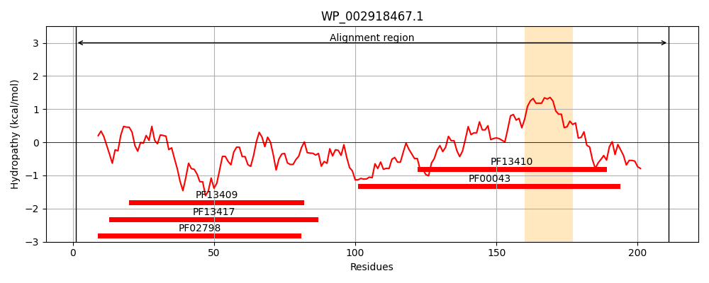
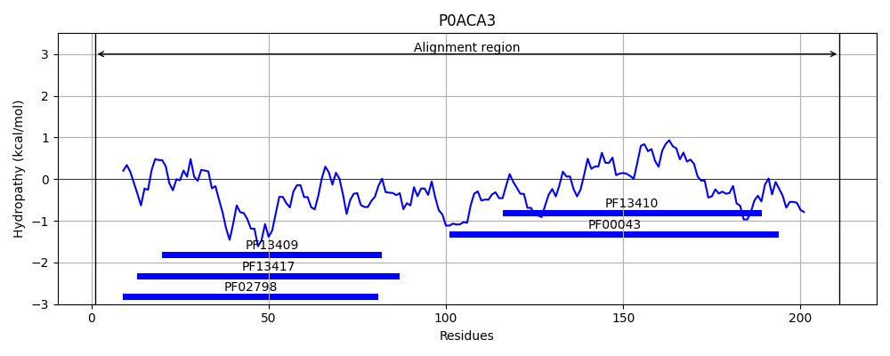
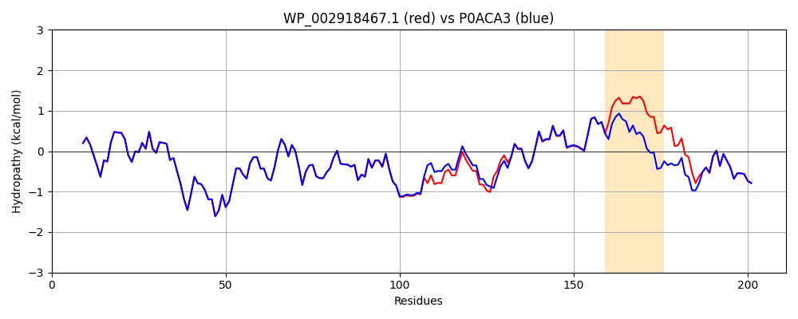

Hit Accession: P0ACA3
Hit TCID: 1.A.12.3.1
Hit Description: gnl|BL_ORD_ID|8736 gnl|TC-DB|P0ACA3|1.A.12.3.1 Stringent starvation protein A OS=Escherichia coli (strain K12) GN=sspA PE=1 SV=2
Mach Len: 211
e:0.000000
Query TMS Count : 1
Hit TMS Count: 0
TMS-Overlap Score: 0.000000
Predicted Substrates:CHEBI:3731;chloride, CHEBI:24834;inorganic anion
BLAST Alignment:
Score: 1024 , Bit scores: 399 bits, E-value: 8.5e-144, Alignment length: 211, Percentage identity: 94
Query: 1 MAVAANKRSVMTLFSGPTDIYSHQVRIVLAEKGVSFEIEHVEKDNPPQDLIDLNPNQSVPTLVDRELTLWESRIIMEYLDERFPHPPLMPVYPVARGESRLYMQRIEKDWYSLMNTIQSGTAAQADAARKQLREELLAIAPVFTQKPYFLSDEFSLVDCYLAPLLWRLPVLGVELVGAGAKELKGYMTRVFERDSFLASLTEAEREMRLGR 211
MAVAANKRSVMTLFSGPTDIYSHQVRIVLAEKGVSFEIEHVEKDNPPQDLIDLNPNQSVPTLVDRELTLWESRIIMEYLDERFPHPPLMPVYPVARGESRLYM RIEKDWY+LMNTI +G+A++ADAARKQLREELLAIAPVF QKPYFLSDEFSLVDCYLAPLLWRLP LG+E G GAKELKGYMTRVFERDSFLASLTEAEREMRLGR
Sbjct: 1 MAVAANKRSVMTLFSGPTDIYSHQVRIVLAEKGVSFEIEHVEKDNPPQDLIDLNPNQSVPTLVDRELTLWESRIIMEYLDERFPHPPLMPVYPVARGESRLYMHRIEKDWYTLMNTIINGSASEADAARKQLREELLAIAPVFGQKPYFLSDEFSLVDCYLAPLLWRLPQLGIEFSGPGAKELKGYMTRVFERDSFLASLTEAEREMRLGR 211 | Protein Hydropathy Plots: |
|---|
|  |  |
Pairwise Alignment-Hydropathy Plot:
|
|---|
|  |